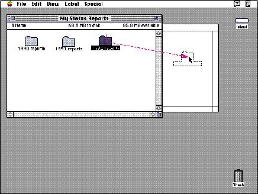

Direct ManipulationDirect manipulation allows people to feel that they are directly controlling the objects represented by the computer. According to the principle of direct manipulation, an object on the screen remains visible while a user performs physical actions on the object. When the user performs operations on the object, the impact of those operations on the object is immediately visible. For example, a user can move a file by dragging an icon that represents it from one location to another or can position a cursor in a text field by directly clicking the location where the cursor should be placed.Figure 1-1 shows a folder icon being dragged across the desktop as an example of direct manipulation on the computer. Figure 1-1 Direct manipulation  In addition to expecting physical results from their actions, users want their tools to provide feedback. For example, when a drawing tool is moved, a line appears in the document on which the user is working. Users want to see what actions are available at any given moment. If grave consequencesmight follow from any of those actions, they want to know about those consequences--before any damage is done and while they can still change their minds. They want clues that tell them that a particular command is being carried out, or, if it cannot be carried out, they want to know why not and what they can do instead. Users also want topics of interest to be highlighted. Animation, when used sparingly, is one of the best ways to show a user that a requested action is being carried out. For example, animated pointers reassure the user, during a lengthy process such as saving a large document to disk, that the computer is completing the task without any problems. |